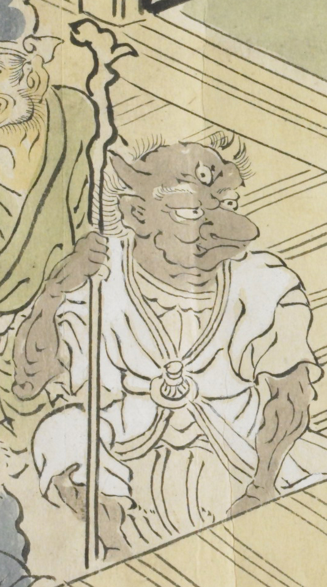

三つ目の鬼。高い鼻で口をへの字に曲げている。白い衣服を着ている。杖を手に持っている。髪毛がはねている。
出典：親書誌：U426_nichibunken_0079：酒天童子絵巻；シュテンドウジエマキ／日付：2006／資源識別子：U426_nichibunken_0079_0003_0006
Copyright (c)2010- International Research Center for Japanese Studies, Kyoto, Japan. All rights reserved.